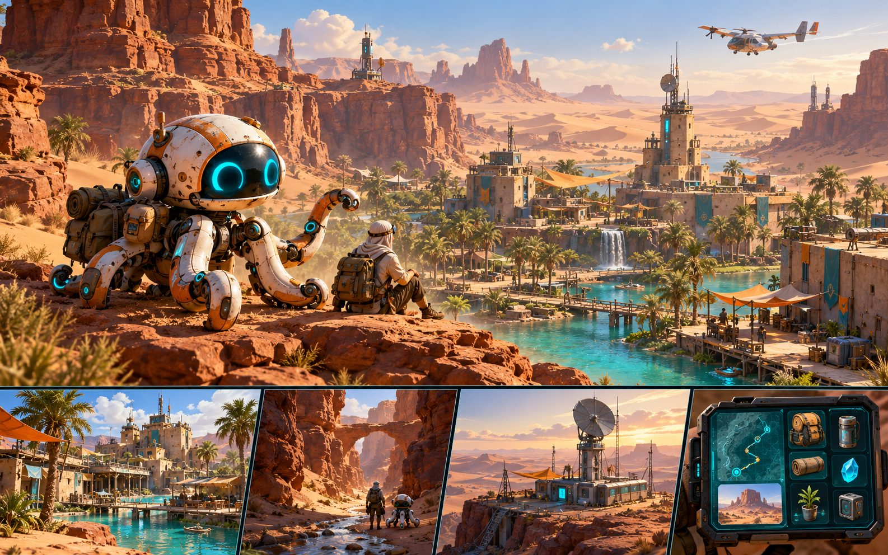

قرية الواحة
محطة آمنة ومجتمع ينتظر عودة الاتصال.
مشروع لعبة مستقل من EVENTO
استكشف عالماً صحراوياً غامضاً، أعد تشغيل محطات الإرسال، وأنقذ فرق الاستكشاف مع روبوت الأخطبوط.

تصور بصري • ليس لقطة من اللعبةالفكرة الأساسية
Octopus S1 مغامرة هاتف أحادية اللاعب. تبدأ من محطة آمنة، تتبع إشارات متقطعة، تجمع ما تحتاج إليه، وتعيد الاتصال قبل عودتك إلى نقطة الإخلاء.
كتالوج العالم
هذه بطاقات اتجاه فني أولي. ستتحول إلى مشاهد فعلية بعد اعتماد تصميم الشريحة.
محطة آمنة ومجتمع ينتظر عودة الاتصال.
ممرات صخرية تكشف الضوء ما تخفيه.
أعد تشغيل الشبكة وحدد نقطة الإخلاء.
منطقة لاحقة تتطلب قراءة الريح والرؤية.
رفيقك
رفيق الأخطبوط هو قلب الهوية واللعب: يرسل نبضة كشف، يشير إلى الموارد، ويتعلم العودة إلى اللاعب. شكله وألوانه هنا تصور أولي إلى أن يندمج نموذج ثلاثي الأبعاد فعلي.
تصميم أوليمسار EVENTO
نعرض التصور منفصلاً عن اللعب الفعلي. لا يظهر تنزيل حتى يثبت تشغيل APK على جهاز Android.